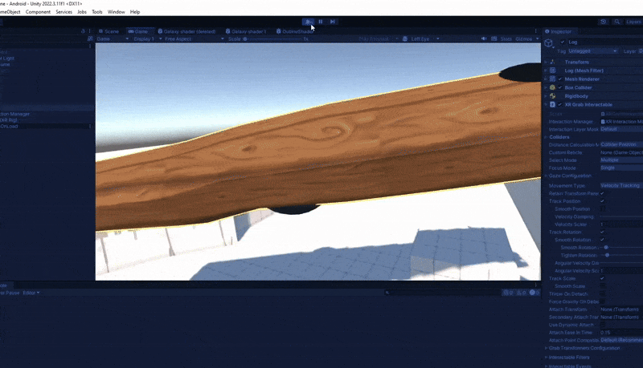
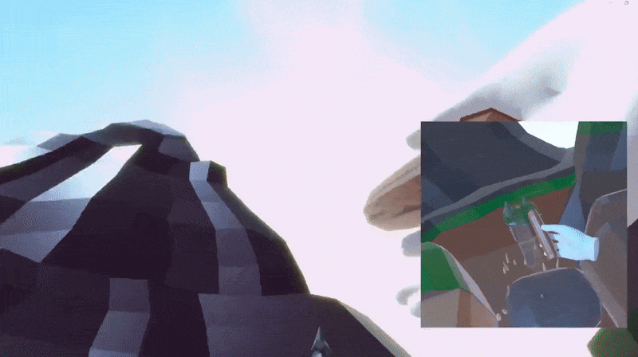
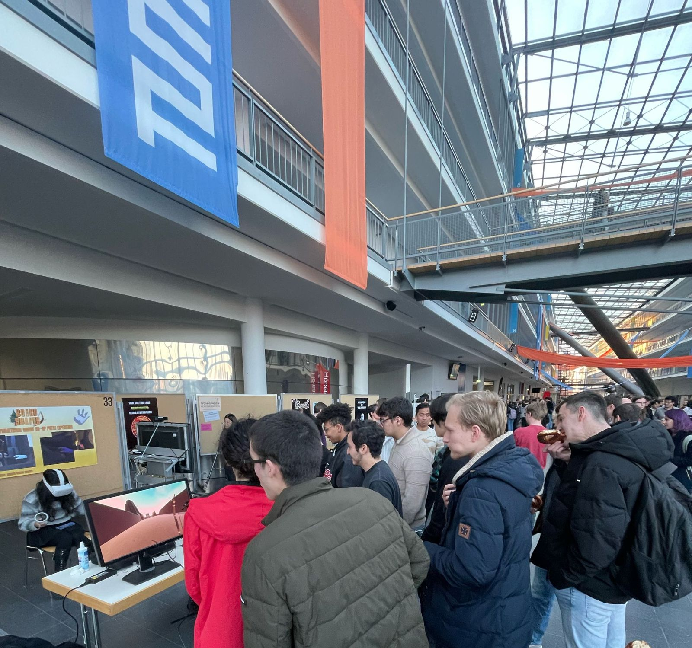
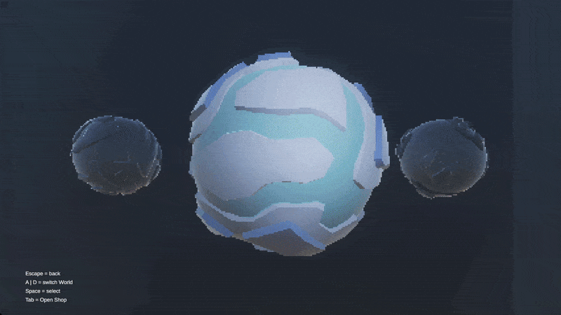
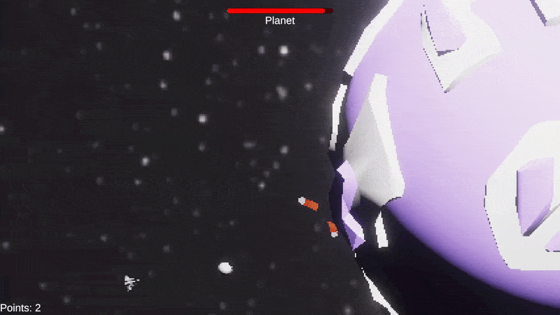

The two games that I developed during my time at TUM and their journey:
Boardscapes, a cross platform game between PC and VR and
Planet Miner, my very first game at TUM
Boardscapes
Boardscapes is a cross platform game between PC and VR in which both players work together to solve puzzles. If you have ever played Moss on any VR headset, you know what the game feels like, just that the little guy on the ground is actually another player. The game isnt local but fully online, so learning Photon to synchronize mechanics and visuals was a huge challenge, but making for an impressive project given the one month time frame.

The process
The first time working in a real team, being the only one able to test and develop in VR while developing a networked, cross platform game between PC and VR for the first time was a huge challenge. There was a lot of pressure to perform in this project because a lot of the games' appeal hinged on the interaction between PC and VR players being smooth and easily understood. Designing an implementing simple and intuitive mechanics was at the forefront of our development process and really payed off once we were allowed to present our game at the TUM demo day.

Working in a team
At this point I had rarely worked in collaboration with other people on computer science projects. I had a good understanding of git and versioning but had previously only applied my knowledge for personal use. Suddenly being supported by a team and having to adapt to a quickly approaching deadline was a fun challenge that brought with it a lot of experience when handling a group. Many sleepless nights were spent filling in for when people went sick or simply couldn't perform for private reasons. And still, having one or two motivated people by your side that pushed to make the project better and better is what really made the experience memorable.

Making use of the capabilities
Expanding on the topic of creating simple and intuitive mechanics, we thought to mainly focus on things people probably were already familiar with on PC and to make us of very simple gameplay in the VR headset. The goal was to create a harmony between the two that would still remain memorable. So every mechanic or puzzle in the game uses one or no buttons at all, seeing the giant VR player in a protective role, often times holding their hand guardingly above their small PC-bound friend.

Presenting at TUM
This is a more general topic. Creating games at TUM often times lets you display them in their halls at their Demo-Day event. The best games made in the courses are picked out and get to show off their work in front of others and needless to say, our game made it!
Planet Miner
Planet Miner was the first game I really made at TUM. We were given two months after our first official course on Unity to make a game in a team. I ended up joining in a bit later and had to develop on my own, but luckily I was still chosen for the Demo Day to display.

Really enjoying studies
This game was the first time in my studies I was allowed to make that would be graded. I spent roughly 5h a day working on the project, trying to get as many features in as I could.

Stress and deadlines
The deadline still ended up being brutal. Not only did I start late but the project was said to be finished in the middle of exam season. Late nights and little sleep let me pull through.

Having fun with it
Being allowed to present my very first game made at TUM gave me a huge confidence boost and the experience of working on a project with this amount of passion really reaffirmed my love for making videogames. Before this, none of my work got presented outside of a private space and the experience was thrilling.